Дополненная реальность (AR от англ. Augmented Reality) — это технология, которая накладывает цифровую информацию на реальные объекты. Настоящий мир дополняется цифровыми элементами: текстом, картинками, 3D-объектами и анимацией.
Это следующий шаг в эволюции человеко-машинного взаимодействия, который обещает заменить смартфоны и компьютеры, перенеся интерфейсы прямо в наше поле зрения.
Apple Vision Pro
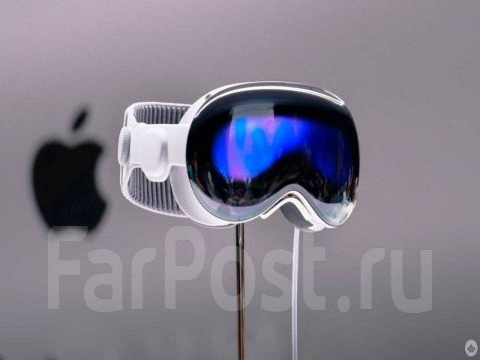
Microsoft HoloLens 2
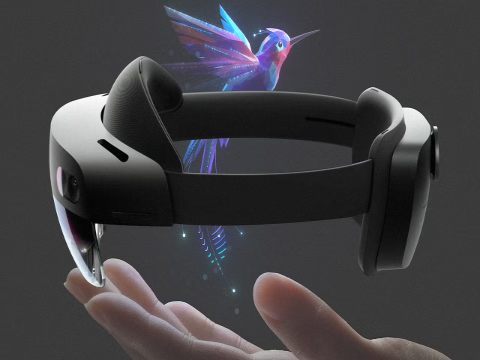
Xreal Air 2
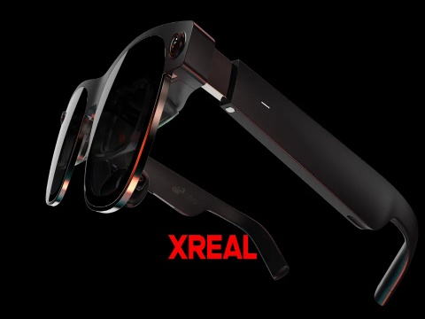
AR — это среда, в которой в реальном времени объединены физические и виртуальные объекты. Главное отличие дополненной реальности от виртуальной (VR) заключается в том, что она не заменяет реальный мир, а дополняет его. Это делает технологию удобной для использования как в повседневной жизни, так и в профессиональной деятельности.
Ключевые признаки дополненной реальности:
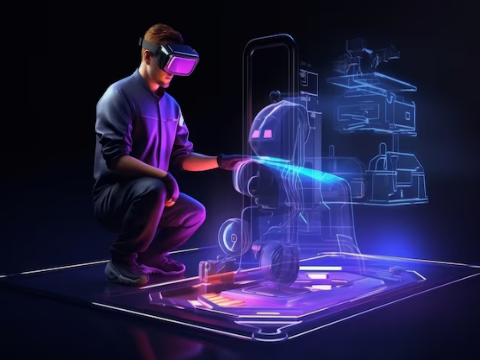
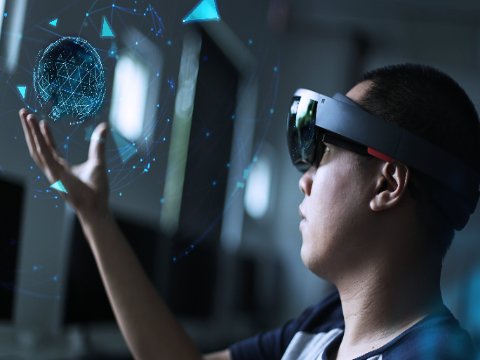
Развитие дополненной реальности началось ещё в XX веке. Одним из первых устройств считается система, созданная в 1968 году, которая могла отображать простые компьютерные изображения поверх реального мира.
Со временем технологии стали развиваться быстрее. В 2000-х годах появились первые устройства для массового рынка, а в настоящее время создаются более совершенные модели, которые активно используются в различных сферах.
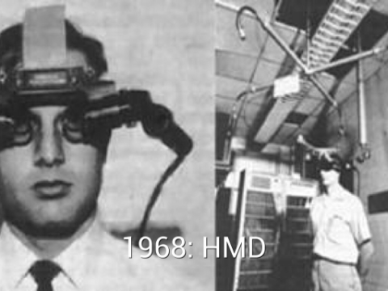
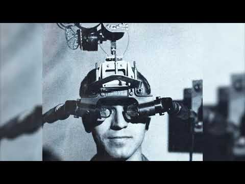
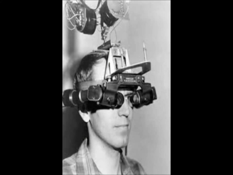
Очки дополненной реальности состоят из нескольких основных элементов: оптической системы, датчиков и вычислительного блока. Камеры и сенсоры анализируют окружающее пространство, а устройство обрабатывает полученные данные. После этого цифровые объекты отображаются на линзах очков и воспринимаются как часть реального мира. Все процессы происходят в реальном времени, что делает использование технологии удобным.
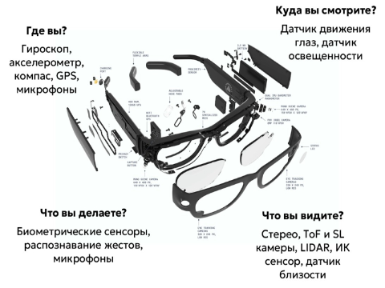
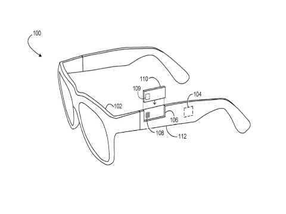
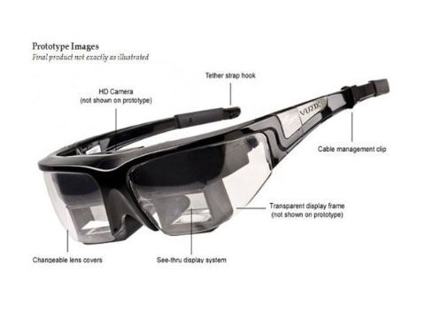
Современные очки дополненной реальности отличаются по своим возможностям и области применения. Профессиональные устройства используются в промышленности, медицине и обучении, тогда как более простые модели предназначены для повседневного использования. Например, одни устройства обеспечивают высокую точность и подходят для работы, а другие ориентированы на развлечения и просмотр контента. Одни автономны, а другие зависят от внешнего устройства, к которому они подключаются Это позволяет выбрать модель в зависимости от целей пользователя.
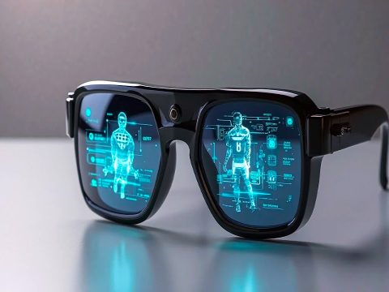
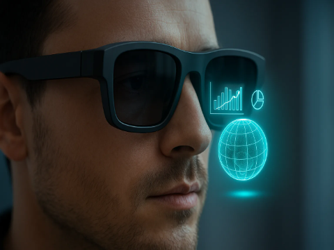
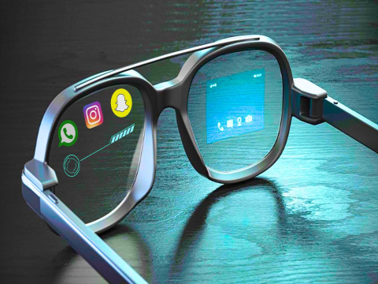
| Модель | Сегмент | Цена | Оптическая технология | Автономность | Трекинг и ввод | Разрешение | Применение |
|---|---|---|---|---|---|---|---|
| HoloLens 2 | Корпоративный | ~350000 рублей | Волноводы | 2-3 часа | Руки, глаза, голос | 2К | Бизнес, медицина |
| Apple Vision Pro | Премиум-потребительский | ~350000 рублей | Микро-OLED | 2 часа | Руки, глаза, голос | Более 4К | Работа, творчество |
| Xreal Air 2 | Потребительский | ~45000 рублей | Birdbath | Внешнее устройство | гироскоп, сенсор на оправе | 1920x1080 | Видео, игры |
Промышленность: Цифровые инструкции на сборке (сокращение ошибок на 40%).
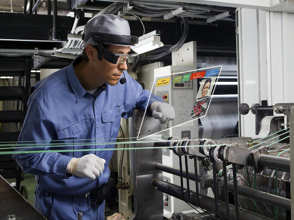
Медицина: Наложение 3D-моделей органов на тело пациента перед операцией.
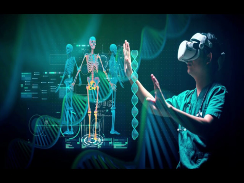
Образование: Интерактивные учебники и «оживающие» исторические сражения.
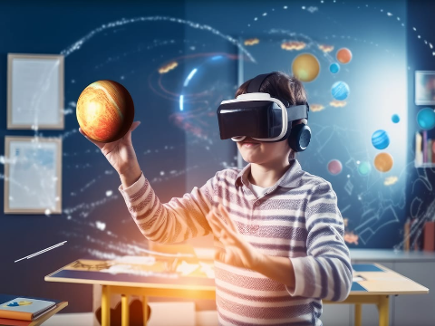
Логистика: Подсказки маршрутов на складах.
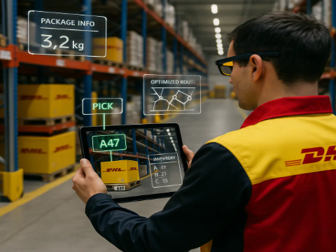